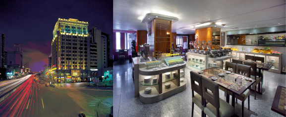
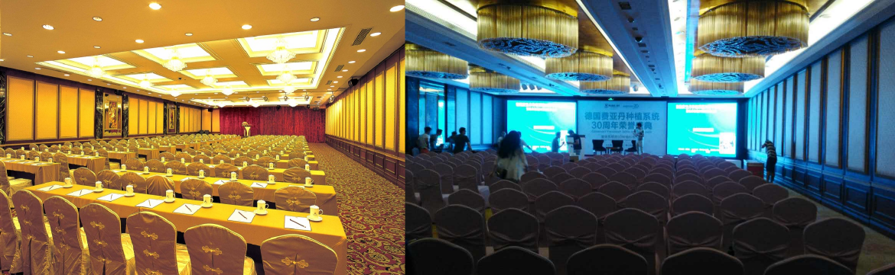
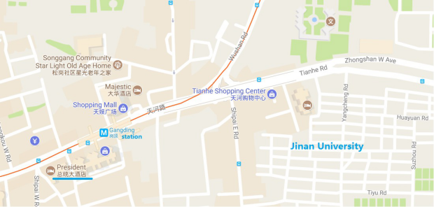
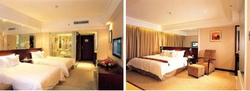

Conference Location — Why Guangzhou
One of the most prosperous cities in China, Guangzhou is the capital of Guangdong province in southern China, located at the north of the Pearl River delta. Historically, Guangzhou is both the start of the Maritime Silk Road and the center of Lingnan Culture. With the first known settlement in the area back to 1100BC (Cf. wikipedia), Guangzhou has the longest history among the international trade port cities in the world. The China Import and Export Fair (Canton Fair) has been held twice a year in the city since 1957.
Yum Cha
Most importantly, Guangzhou ranks first in the number of restaurants and tea-houses in the country. As one of the four major food styles of China, Cantonese cuisine is good in color, fragrance, taste and presentation, and is the most widely served style of Chinese cui- sine in the world. Yum cha, or dim sum, being one of the most well known light brunch Chinese food, has been welcomed and enjoyed by people all around the world.
Jinan University
Jinan University
Most importantly, Guangzhou ranks first in the number of restaurants and tea-houses in the country. As one of the four major food styles of China, Cantonese cuisine is good in color, fragrance, taste and presentation, and is the most widely served style of Chinese cui- sine in the world. Yum cha, or dim sum, being one of the most well known light brunch Chinese food, has been welcomed and enjoyed by people all around the world.
Today, the University consists of 27 colleges (or schools), 59 depart- ments, 182 research institute and 77 research labs, hosting 50,535 un- dergraduate and postgraduate students (13,512 of which are international students). Notably, the university has an International School which is a college with all courses taught exclusively in English. The conference will be organized by the College of Information Science and Technology and the College of Network and Space Security.
Conference Venue
Guangzhou President Hotel
The conference will be held at Guangzhou President Hotel in Tianhe Distribute which is located next to Jinan University.The hotel is within walking distance from the Gangding Metro station and about 39 kilometers from the Baiyun International Airport.
Hotel function rooms
The hotel has a business center and five function rooms, and it also provides concierge service, travel service, safe deposit boxes at reception, charged parking lots, car/bus rental service and free WiFi in public area. Its premier function room has the capacity to hold meetings for up to 200 people, which will be sufficient for a large conference. It also has smaller function rooms with seats for around 80 people (Past TASE conferences have 50-60 attendees.)
Transportation
Travelling to Guangzhou
Guangzhou Baiyun International Airport (IATA code: CAN) is the main airport of Guangzhou and the main hub of China Southern Airlines. In 2015, Guangzhou Baiyun International Airport was China’s third-busiest and world’s 17th-busiest airport by passenger traffic, with 55,201,915 pas- sengers handled. The airport is about 40 kilometres away from Jinan uni- versity.
To reach Jinan University’s main campus in Tianhe District from Baiyun Airport, there are at least two ways to plan your travel.
Map for the location area: Gangding Metro station, Guangzhou President Hotel and Jinan University
•Metro/Subway: From Airport South, take Line 3 northern extension line (orange line in Fig.10) towards south to Tiyu Xilu (12 stops), then change to Line 3 (also in orange in Fig.10) to Gangding (2 stops). From the Gangding Metro station, the Guangzhou President Hotel is about 100 metres to the west. The west gate of Jinan univer- sity is about 500 metres to the east (Fig.6). It takes about 45 minutes to reach Gangding by Metro and the total cost is about 15 RMB.
•Taxi: Taxi is more convenient if you have a big luggage, but also more expensive. It takes about 30 minutes to 1 hour (which depends on traffic) and the cost is about 150 RMB.
Local traffic and surrounding attractions
Aerial view over the Canton Tower and Zhujiang New Town — Guangzhou’s New Central Business District
Yangchengtong is a contactless rechargeable smartcard that you can purchase at local news kiosks and Metro stations, which is designed for paying the travel fares in the Metro, buses, taxis and ferries in Guangzhou, China and surrounding cities. When you take Guangzhou Metro, the start- up cost is 2 RMB (less than 30 /c USD) and the total cost is measured by distance.
the Five Rams
As a modern city built on top of a historic town, Guangzhou is rich in history, culture and natural beauty, which altogether brings to you plenty of attractions for sightseeing. Within reach of public transportation, you may visit a variety of attractions at your choice, to name a few, former site of Whampoa Military Academy (founded in 1924 by Sun Yat-sen to cultivate military officers), Sacred Heart Cathedral on Yide Road, Baiyun Mountain (White Cloud Mountain), Nanyue King’s Tomb Museum (ancient time architecture of the Han Dynasty of 206 B.C.-24 A.D.), Bright Filial Piety Temple (dated back to 1700 years ago) and Yuexiu Park (where to find the famous statue of the Five Rams). Joining a scenic night tour on the Pearl River cruise will bring you unforgettable memory to the city’s night life culture.
Accommodation
Standard rooms
The rates for a standard single or double room at Guangzhou President Hotel is in the range of 438 RMB to 988 RMB per night breakfast inclusive (http://presidenthotel-gz.com/presidenthotel-gz_kfindex. htm). With our experience, it is possible to bargain and reserve a fixed number (e.g., 20) of pre-booked rooms at a discounted price.


{kind=link}
{kind=link}